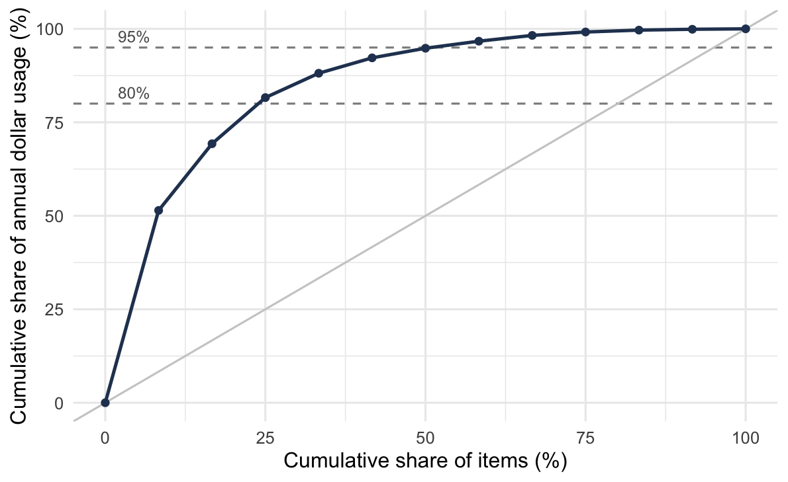
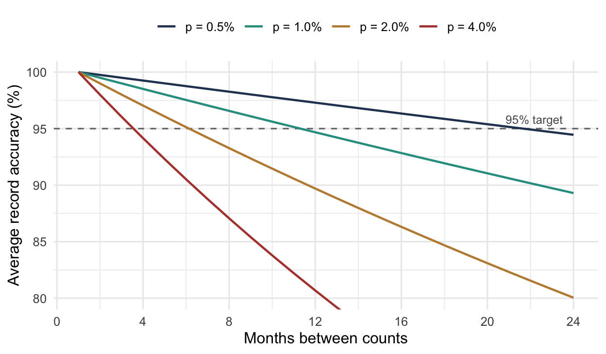
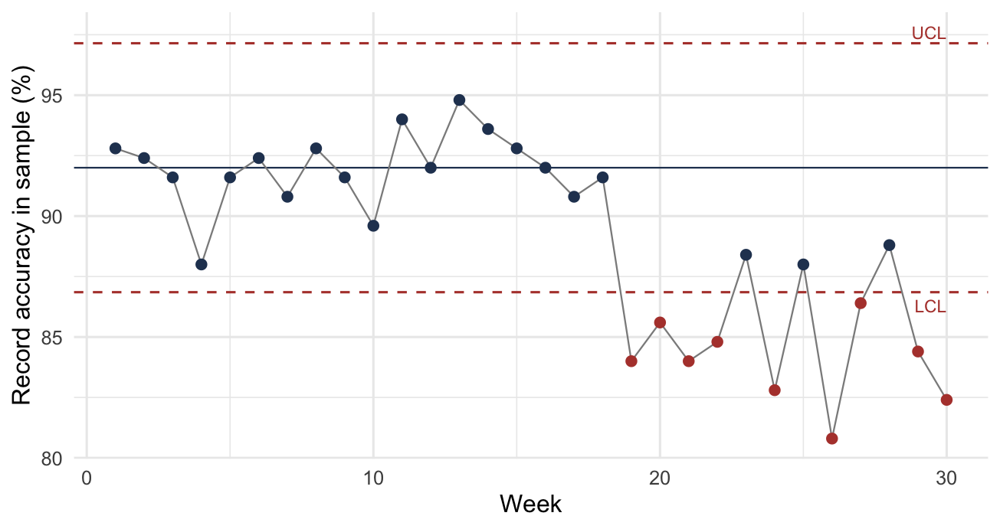

2 Managing Inventory
NoteLearning objectives
After reading this chapter you should be able to:
- describe the recurring decisions an inventory manager faces across a large item population
- construct an ABC classification and defend its cut points
- explain what a single-criterion classification misses, and apply a multi-criteria alternative
- classify items by demand pattern, and say which model each pattern selects
- explain why inventory records drift, and measure record accuracy
- design a cycle counting program and set count frequencies by class
2.1 The Manager’s Problem
Recall that Section 1.6.3 ends Chapter 1 with a single problem: choose the policy parameters that minimize Equation 1.15, or that meet a service target at least cost. Everything from Chapter 3 onward solves that problem under different assumptions about demand, lead times, and review.
All of it concerns one item. A manager does not have an item. In this chapter we take up the decisions that arise only when there are thousands of them, and none of those decisions is a lot sizing formula.
2.1.1 What Scale Changes
A distributor carries tens of thousands of stock keeping units. A hospital system carries more. Each one has a demand history, a lead time, a unit cost, a supplier, and a policy that has to come from somewhere.
Computation is not what breaks. A spreadsheet will produce forty thousand order quantities in a few seconds, and the models in this book are not expensive to evaluate. What breaks is everything around the computation. Someone has to decide which items deserve a considered decision instead of a default, keep the inputs current as demand and costs move, investigate the exceptions the system raises, and answer for the results. Those activities consume people, and people are finite in a way that arithmetic is not.
Example 2.1 (The attention budget) A distributor stocks 12,000 items. One planner is responsible for them, and about 30 hours a week of that planner’s time is genuinely available for reviewing items, the rest going to expediting, supplier problems, and meetings. A considered review of one item, looking at its recent demand, checking its parameters, and deciding whether to change anything, takes about six minutes. We work out what that buys.
The weekly capacity is
\[ \frac{(30)(60)}{6} = 300 \text{ reviews per week} \]
or 15,000 reviews a year over 50 working weeks. Spread evenly across the portfolio that is
\[ \frac{15{,}000}{12{,}000} = 1.25 \text{ reviews per item per year} \]
Now we try to allocate that budget sensibly. Suppose 8% of items are important enough to want monthly attention. Then 960 items at 12 reviews a year consumes 11,520 reviews and leaves 3,480. Give the next 17%, some 2,040 items, a quarterly review and the requirement is 8,160 more, for a total of 19,680 against a budget of 15,000. It does not fit.
Falling back to reviewing that middle group once a year costs 2,040 and leaves 1,440 reviews for the remaining 9,000 items. That works out to one review per item every six years.
Two conclusions follow, and neither depends on the particular numbers.
Most items will never be looked at. That is not through neglect but by arithmetic. Whatever the portfolio size and however diligent the planner, the great majority of items must be handled by a rule that runs without anyone examining the item.
The scarce resource is attention, not computation. For example, giving all 12,000 items even a quarterly review would take 48,000 reviews a year, i.e. 3.2 planners doing nothing else. The order quantities, by contrast, could be recomputed nightly at no meaningful cost.
A manager’s real decisions are not the ones the models answer. The models answer how much and when, for an item, once the inputs are known. The manager decides which items get a considered answer and which get a default, and whether the inputs can be trusted at all.
2.1.2 What the Manager Decides
Table 2.1 lists the recurring responsibilities and where each is treated.
| Responsibility | The question | Treated in |
|---|---|---|
| Segmentation | Which items deserve attention, and which can share a policy? | Section 2.2 |
| Record accuracy | Do the quantities the policies read match the shelf? | Section 2.3 |
| Policy parameters | How much to order, and when? | Parts I and II |
| Service targets | What availability is promised, and measured how? | Section 1.6 |
| Stocking decisions | How much of an item is held at each location? | Chapter 9 |
| Excess and obsolete | What happens to stock that will not sell? | Section 2.4 |
| Performance reporting | What is measured, and to whom? | Section 2.4 |
The first two are the subject of this chapter, and we place them before the models, not after, for the same reason.
Segmentation comes first because the models assume an allocation of attention that somebody has to make. Every result in Parts I and II is derived for an item whose parameters are known and current. Recall that Example 2.1 shows this condition cannot hold for the whole portfolio. Thus, deciding which items it will hold for is a prior decision, and it is not a technical one.
Record accuracy comes first because the models read a record, not a shelf. Section 1.3 defines the state of an inventory system as though \(I(t)\) were directly observable. It is not. Every policy in this book triggers on a number the system believes, and Section 2.3 is about the gap between that number and the truth. A correct policy applied to a wrong quantity is wrong, and nothing in its output says so.
Both are prerequisites in the strong sense. That is, a policy can be derived perfectly and still fail, either because it was applied to items that never should have had individual treatment, or because it was computed from quantities that were not true. Notice that neither failure is visible in the policy itself.
2.1.3 What This Chapter Does Not Cover
Two large topics are named here and treated elsewhere, because both need machinery this chapter does not have.
What to stock, and where, is a decision about the network, not about an item, and it turns on the stocking position cost \(f\) of Section 1.4.7 together with the structure of the supply network. This book takes the stocking locations as given; Chapter 9 decides how much each of them holds.
How much and when is the rest of the book.
What remains here is the work that has to be done before either of those questions can be answered sensibly: dividing the portfolio so that attention can be allocated, and establishing that the numbers everything else depends on deserve that reliance.
2.2 Grouping and Segmentation
A manager responsible for forty thousand items cannot make forty thousand decisions. Something has to reduce the problem, and that something is grouping. That is, we partition the item population so that decisions are made once per group instead of once per item.
2.2.1 Two Reasons to Group
Grouping is done for two different purposes, and confusing them causes most of the trouble in practice (Abaydulla 2016).
Grouping for attention. Management effort is scarce and should go where it matters. An importance-based scheme ranks items so that the few worth individual review can be identified and the many that are not can be left to a rule. ABC classification is the standard instrument, and Section 2.2.2 takes it up.
Grouping for policy. Setting and maintaining a policy costs effort whether the item is important or not. An operations-based scheme puts items with similar operating characteristics together so that one policy can serve them all without much loss. Clustering methods are the standard instrument, and Section 2.2.7 takes them up.
These are not the same problem. They use different attributes, produce different groups, and are judged by different criteria. An importance ranking says nothing about whether two items can share a reorder policy, and a scheme that groups items by operating similarity says nothing about which deserve a planner’s attention.
Applying one where the other is needed is the commonest failure in practice. It is why Ernst and Cohen (1990) observe that classifications built on cost and volume alone “may provide unacceptable performance when evaluated with respect to cost and service measures in complex inventory environments.”
Table 2.2 sets out the distinction. Reading down the two columns, notice that they share no row: not the question, not the attributes, not the method, not even the criterion by which the result is judged. Thus, a scheme built for one column is not evidence about the other.
| Grouping for attention | Grouping for policy | |
|---|---|---|
| Question answered | Which items deserve review? | Which items can share a policy? |
| Typical attributes | Annual dollar usage, criticality | Demand rate, unit cost, lead time, demand pattern |
| Typical method | ABC classification | Clustering |
| Number of groups | Three to six | Whatever the data supports |
| Judged by | Whether attention lands on the right items | Cost penalty against individual policies |
2.2.2 Pareto Analysis and ABC Classification
The observation behind ABC classification is that annual dollar usage is distributed very unevenly across items. A small fraction of items accounts for most of the money.
- Let \(\lambda_i\) represent the annual demand for item \(i\), and \(c_i\) its unit cost, so that their product is the annual dollar usage of that item. Ranking by
\[ \text{annual dollar usage} \;=\; \lambda_{i}\,c_{i} \tag{2.1}\]
and cutting the ranked list into classes concentrates attention where the money is. Class A gets individual review and tight control, class C gets a simple rule and infrequent attention, and class B sits between them.
Example 2.2 (Constructing an ABC classification) A location carries twelve items with the annual demands and unit costs below. The third column is Equation 2.1, and the rows are already sorted by it. We construct the classification in two steps, first accumulating the value and then choosing cut points.
| Item | Annual demand \(\lambda\) | Unit cost \(c\) | Annual dollar usage | Cumulative | Cumulative % |
|---|---|---|---|---|---|
| IT-01 | 1,200 | $75.00 | $90,000 | $90,000 | 51.4% |
| IT-02 | 60 | $520.00 | $31,200 | $121,200 | 69.3% |
| IT-03 | 9,000 | $2.40 | $21,600 | $142,800 | 81.6% |
| IT-04 | 300 | $38.00 | $11,400 | $154,200 | 88.1% |
| IT-05 | 40 | $180.00 | $7,200 | $161,400 | 92.2% |
| IT-06 | 2,500 | $1.80 | $4,500 | $165,900 | 94.8% |
| IT-07 | 150 | $22.00 | $3,300 | $169,200 | 96.7% |
| IT-08 | 18,000 | $0.15 | $2,700 | $171,900 | 98.2% |
| IT-09 | 25 | $64.00 | $1,600 | $173,500 | 99.2% |
| IT-10 | 800 | $1.10 | $880 | $174,380 | 99.7% |
| IT-11 | 5,000 | $0.08 | $400 | $174,780 | 99.9% |
| IT-12 | 90 | $2.20 | $198 | $174,978 | 100.0% |
Total annual dollar usage is $174,978. Cutting at 80% and 95% of cumulative value gives Table 2.3.
| Class | Items | Share of items | Share of value |
|---|---|---|---|
| A | IT-01 to IT-03 | 25% | 81.6% |
| B | IT-04 to IT-06 | 25% | 13.2% |
| C | IT-07 to IT-12 | 50% | 5.2% |
Notice that three items out of twelve carry 82% of the annual expenditure, while half the items carry 5%. The technique depends on that concentration, because a planner who reviews only IT-01, IT-02, and IT-03 is watching most of the money.
Notice also that the cut points were chosen, not derived. For example, moving the A boundary up one item would put 88% of the value in class A, at the cost of reviewing a third of the portfolio. Nothing in the data says where to stop. Thus, the conventional 80/15/5 split is a convention, not a result, and you should be prepared to defend the cut points you choose.
Figure 2.1 shows the same data as a cumulative curve, which is how the concentration is usually presented and how the cut points are usually chosen.
Read the curve from left to right. It rises steeply over the first quarter of the items, reaching 82% of the value by the third item, and then flattens as each further item adds less. The diagonal is what the curve would look like if every item carried the same annual dollar usage. Thus, the gap between the curve and the diagonal is the concentration itself.
Notice what that gap tells you before any cut point is chosen. An item file that plots close to the diagonal has no concentration to exploit, and ABC classification will not help there. The steeper the early rise, the more a small class A buys.
2.2.3 What One Criterion Misses
Ranking by annual dollar usage answers one question, where the money is. That is not always the right question.
The failure runs in both directions (Flores and Whybark 1986). For example, a high dollar usage item may be entirely undemanding, i.e. readily available, substitutable, with a short lead time and no consequence to running out. It will be reviewed weekly because it is expensive. A low dollar usage item may be a fastener that halts an assembly line, available from one supplier on a four month lead time. It will be reviewed annually because it is cheap.
Flores and Whybark (1986) propose that more than one criterion be used, and the criteria proposed since then are numerous: lead time, criticality, commonality, obsolescence, substitutability, reparability, scarcity, durability, order size requirements, stockability, and stockout penalty cost (Ramanathan 2006). Criticality is the most important of these, because it captures the consequence of not being able to supply, exactly what dollar usage cannot see.
Example 2.3 (Reclassifying on two criteria) Recall the twelve items of Example 2.2, and add a criticality rating on a five-point scale, where 5 means an item whose absence halts an operation.
We normalize each criterion to the unit interval, dollar usage by its maximum and criticality by \((\text{rating}-1)/4\), and then score each item with equal weights:
\[ \text{score}_{i} \;=\; 0.5\left(\frac{\lambda_{i} c_{i}}{\max_j \lambda_{j} c_{j}}\right) \;+\; 0.5\left(\frac{\text{criticality}_{i}-1}{4}\right) \]
| Item | Dollar usage | Criticality | Score | New class | Old class |
|---|---|---|---|---|---|
| IT-01 | $90,000 | 3 | 0.750 | A | A |
| IT-08 | $2,700 | 5 | 0.515 | A | C |
| IT-11 | $400 | 5 | 0.502 | A | C |
| IT-05 | $7,200 | 4 | 0.415 | B | B |
| IT-03 | $21,600 | 3 | 0.370 | B | A |
| IT-07 | $3,300 | 3 | 0.268 | B | C |
| IT-04 | $11,400 | 2 | 0.188 | C | B |
| IT-02 | $31,200 | 1 | 0.173 | C | A |
| IT-06 | $4,500 | 2 | 0.150 | C | B |
| IT-09 | $1,600 | 2 | 0.134 | C | C |
| IT-10 | $880 | 1 | 0.005 | C | C |
| IT-12 | $198 | 1 | 0.001 | C | C |
Seven of the twelve items change class. Two of the movements matter most.
IT-11 rises from C to A. It is an eight cent part with $400 of annual usage, ranked eleventh of twelve on money and third overall once criticality is counted. Thus, under the single-criterion scheme it would be counted once a year and reviewed never.
IT-02 falls from A to C. It is the second most expensive line in the file at $31,200 a year, and it is a criticality 1 item, i.e. substitutable, with no operational consequence to a stockout. It was receiving weekly attention because of its price tag alone.
Notice that the weights were chosen, and that a different pair would move different items. That is the weakness of this approach, and Section 2.2.4 is about avoiding it.
2.2.4 Deriving the Criterion Instead of Choosing Weights
The difficulty with Example 2.3 is the 0.5. Nothing justified it, a manager who preferred 0.7 would get different classes, and no experiment settles the question.
A better line of attack derives the ranking statistic from the cost model rather than assembling it from opinions. Zhang et al. (2001) formulate the inventory problem as minimizing investment subject to service and order frequency constraints, and extract from the resulting expression for the reorder point a single classifying statistic combining unit cost, lead time, and demand. Teunter et al. (2010) extend this with a cost criterion that includes shortage cost, so that criticality enters through the cost of failing to supply instead of through a subjective rating, and report that it outperforms both traditional ABC and the earlier criterion across several real datasets.
The appeal is that several parameters are folded into one statistic without anyone choosing weights, and that the statistic is the one the objective function implies. Thus, where a defensible cost model exists, this is the better approach. Where one does not, weighted scoring remains, and you should record its weights as the assumptions they are.
2.2.5 Which Attributes, and Which Forbid Grouping
Not every attribute plays the same role. Lenard and Roy (1995) separate three kinds, given in Table 2.5, and the distinction is the most practically useful in this literature.
| Role | Meaning | Examples |
|---|---|---|
| Prevent grouping | Items differing here must not share a group at all | Storage structure, strategic importance |
| Weaken grouping | Differences degrade a shared policy without forbidding it | Demand dispersion, lead time |
| Useful to the manager | Make the resulting groups actionable | Nature of the item, supplier, existing functional groups |
The first row of Table 2.5 is the one that gets skipped. For example, two items stocked at different echelons serve different functions, so grouping them produces a policy correct for neither, however similar their demand rates. Thus, you should identify the preventing attributes first and partition on them before any statistical method is applied.
Abaydulla (2016) draws a related line between structural attributes, which describe an item’s position in the supply network, and non-structural attributes, which do not. You should carry that finding forward. Structural attributes should not be fed into a clustering algorithm as ordinary numeric variables, because doing so raised both the cost penalty and the computation time. It was also unnecessary, since items sharing a network structure tended to cluster together on their other attributes anyway. Thus, partition on structure first, then cluster within.
For operational attributes, Kampen et al. (2012) offer four categories: volume (demand quantity and demand value), product (unit cost, lead time), customer, and timing. Timing is the least used of the four, and its most important member is the interval between demands. The next section takes that up, and the criterion there selects the model instead of merely describing the item.
2.2.6 Demand Pattern Segmentation
Two items with identical annual demand can behave entirely differently. For example, one sells four units every week while the other sells two hundred units twice a year. Annual dollar usage cannot tell them apart, and no policy that suits one will suit the other.
We describe the pattern with two quantities.
- Let \(\mathit{ADI}\) represent the average demand interval, which measures intermittence, i.e. how often a demand occurs.
- Let \(\mathit{CV}^{2}\) represent the squared coefficient of variation of the non-zero demand sizes, which measures lumpiness, i.e. how variable a demand is when it does occur.
The first is the average interval between non-zero demands,
\[ \mathit{ADI} \;=\; \frac{\text{number of periods}}{\text{number of periods with non-zero demand}} \tag{2.2}\]
and the second is
\[ \mathit{CV}^{2} \;=\; \left(\frac{s}{\bar{x}}\right)^{2} \tag{2.3}\]
where \(\bar{x}\) and \(s\) are the mean and the sample standard deviation of the non-zero demands, with \(n - 1\) in the denominator of \(s\), as Example 2.4 computes them. Cutting each at a threshold gives the four classes of Table 2.6.
| Frequent (\(\mathit{ADI} \le 1.32\)) | Infrequent (\(\mathit{ADI} > 1.32\)) | |
|---|---|---|
| Variable (\(\mathit{CV}^{2} > 0.49\)) | Erratic | Lumpy |
| Steady (\(\mathit{CV}^{2} \le 0.49\)) | Smooth | Intermittent |
Example 2.4 (Classifying five demand histories) Five items each have twelve periods of demand. We classify them by computing Equation 2.2 and Equation 2.3 for each.
| Item | Demand by period |
|---|---|
| S-1 | 20, 22, 19, 21, 23, 20, 18, 22, 21, 19, 20, 21 |
| E-1 | 5, 40, 2, 60, 10, 35, 1, 50, 8, 45, 3, 30 |
| I-1 | 0, 10, 0, 0, 9, 0, 11, 0, 0, 10, 0, 0 |
| L-1 | 0, 0, 45, 0, 0, 3, 0, 0, 0, 80, 0, 12 |
| B-1 | 0, 15, 12, 0, 18, 14, 0, 16, 13, 0, 17, 15 |
Take I-1 first. Four of the twelve periods carry demand, so from Equation 2.2 \(\mathit{ADI} = 12/4 = 3.00\). The non-zero demands are 10, 9, 11, and 10, with mean 10.0 and standard deviation 0.816, so from Equation 2.3 \(\mathit{CV}^{2} = (0.816/10.0)^{2} = 0.007\). That is infrequent and steady, so I-1 is intermittent.
Repeating for all five gives Table 2.7.
| Item | Non-zero periods | \(\mathit{ADI}\) | \(\mathit{CV}^{2}\) | Class |
|---|---|---|---|---|
| S-1 | 12 | 1.00 | 0.005 | Smooth |
| E-1 | 12 | 1.00 | 0.798 | Erratic |
| I-1 | 4 | 3.00 | 0.007 | Intermittent |
| L-1 | 4 | 3.00 | 1.001 | Lumpy |
| B-1 | 8 | 1.50 | 0.018 | Intermittent |
B-1 is the instructive one. It has demand in eight of twelve periods and very steady sizes, which reads as a well behaved item. However, \(\mathit{ADI} = 1.50\) puts it just past the 1.32 cut and into the intermittent class. Thus, you should not let an item sitting that close to a boundary have its treatment decided by which side it fell on.
The classification matters because it selects the model and does not merely describe the item. The stochastic policies of Chapter 8 assume a demand distribution that a smooth item satisfies and a lumpy one does not. The fill rate computed for a lumpy item from a normal approximation can be badly wrong.
Two cautions apply. First, the thresholds are conventions, and the literature does not agree on when a series becomes intermittent. Proposals include at least 30% of periods with zero demand, no more than 60 to 70% of periods with demand, and a mean interval exceeding 1.25 review periods (Johnston and Boylan 1996).
Second, the class depends on the period length chosen. The same transactions bucketed daily rather than monthly will show more zero periods and a longer inter-demand interval. Thus, an item can be moved between classes by changing nothing but the reporting calendar. You should never allow such a result to drive a policy.
A portfolio is rarely mostly smooth. For example, in a hospital pharmacy study of roughly two thousand items, most items fell outside the smooth class (Varghese et al. 2012). That is the normal case and not a pathology, and it explains much of why fill rate estimates disappoint in practice.
2.2.7 Clustering for Policy
Classification schemes assign items to a small number of predetermined classes. Clustering instead lets the data determine the groups. That is, we place items in a space whose coordinates are their operational attributes and group those that lie close together.
The practical algorithm at scale is k-means, which partitions items into \(k\) groups by repeatedly assigning each item to the nearest group center and recomputing the centers. Alternatives exist, including genetic algorithms, simulated annealing, and tabu search. However, they are far slower on problems of this size, and k-means and its close relatives are essentially the only methods that have been applied to inventory populations of realistic scale (Abaydulla 2016).
Three practical points.
Attributes must be scaled. Demand rate in thousands and unit cost in dollars are not comparable distances, so an unscaled clustering is dominated by whatever attribute happens to carry the largest numbers.
Choosing \(k\) is a judgment. More groups reduce the penalty of a shared policy and increase the work of maintaining policies. For example, Abaydulla (2016) found seven groups outperformed three on penalty cost, which is unsurprising and is exactly the trade Section 2.2.8 makes explicit.
Group first, then decide how far to share. Rossetti and Achlerkar (2011) distinguish two uses of the same clustering. Under group policies, every item in a cluster uses a single policy computed from the group’s average attributes. Under grouped individual policies, the clustering organizes the work but each item still receives its own policy. The first is fast and carries a real penalty, besides costing items their individual identity. The second lands close to individual optimization and costs computation. Both beat ABC on cost and service.
You should keep that distinction in view, because it separates two things that are often run together. Grouping is a way of organizing decisions. It does not oblige you to give every member of a group the same answer.
2.2.8 Evaluating a Grouping
A classification is not right or wrong. It is more or less expensive, and the cost is measurable.
The reference point is what the items would cost under individual policies. Any grouping that forces items to share a policy gives something up against that benchmark.
- Let the grouping penalty represent that loss, as a fraction of the individual policy cost.
That is,
\[ \text{penalty} \;=\; \frac{C(\text{group policies}) - C(\text{individual policies})} {C(\text{individual policies})} \tag{2.4}\]
Notice that Equation 2.4 uses the relevant cost of Equation 1.16 rather than \(\mathit{TC}\), and that the choice matters. Purchase cost is identical under every grouping, so it cancels in the numerator and only inflates the denominator. Dividing by \(\mathit{TC}\) would make the same grouping look cheap for an expensive item and dear for a cheap one, a statement about unit cost and not about grouping.
Set against the penalty is the effort saved, which is roughly the reduction in the number of policies to set, review, and maintain. A decision about grouping is made on those two numbers.
Example 2.5 (Is the grouping worth it?) Six items have been costed three ways: under individual policies, under a two-group scheme, and under a three-group scheme. All figures are annual relevant cost, so purchase cost is excluded. We compute the penalty for each scheme.
| Item | Individual | Two groups | Three groups |
|---|---|---|---|
| A | $4,200 | $4,310 | $4,250 |
| B | $3,800 | $3,905 | $3,845 |
| C | $5,100 | $5,180 | $5,140 |
| D | $1,150 | $1,260 | $1,200 |
| E | $980 | $1,090 | $1,030 |
| F | $1,340 | $1,415 | $1,370 |
| Total | $16,570 | $17,160 | $16,835 |
From Equation 2.4, the two-group scheme costs
\[ \frac{17{,}160 - 16{,}570}{16{,}570} = 3.56\% \]
and the three-group scheme costs
\[ \frac{16{,}835 - 16{,}570}{16{,}570} = 1.60\% \]
The decision is worth $590 a year against $265 a year, set against maintaining two policies, three, or six.
For six items this is not a decision anybody needs to make, because anyone can maintain six policies. Scale it to forty thousand items and the same 3.56% is the price of reducing forty thousand policy calculations to two hundred, the difference between a procedure that runs and one that does not. Notice that the penalty is the same number either way. What changes is what it buys.
2.2.9 Combining Schemes
Nothing requires choosing one method. Importance classification and operational clustering answer different questions, so applying both yields groups that are identified by importance and homogeneous in operation. However, the order in which they are applied matters (Abaydulla 2016).
Importance first, then clustering. Classify into A, B, and C, then cluster within each class. Items keep a visible priority label, and the clusters inside each class support a shared policy. It is the natural choice when management reporting is organized around the classes.
Clustering first, then importance. Cluster on operational attributes, then rank within each cluster. The number of operational groups is no longer constrained to three or six, and the importance label is applied inside groups that are already homogeneous.
The simplest version of the first is a cross-tabulation, classifying items by dollar usage and by demand pattern and then reading the table. For example, an A item with lumpy demand and a C item with smooth demand are different management problems, and neither classification alone distinguishes them.
2.2.10 Using a Classification
A classification earns its place only through the decisions it changes. Table 2.8 lists the usual ones. Notice that a class appearing in none of those rows is changing nothing.
| Decision | How the class enters |
|---|---|
| Review frequency | A items reviewed individually and often, C items on a rule |
| Service target | Higher fill rates for critical or high value classes |
| Count frequency | More frequent cycle counts for A items (Section 2.3.7) |
| Stocking decision | Whether to hold the item at a location at all |
| Policy sharing | Whether a group policy is applied or each item is set individually |
Three failures recur in practice.
Classes become ends in themselves. A quarterly report of how many items are in each class, with no decision attached, is a measurement that costs money and returns nothing.
Boundaries are treated as cliffs. The item just below the A cut and the item just above it are nearly identical, so giving them materially different treatment is arbitrary. Thus, where a decision is sensitive at a boundary, you should look at the items near it, not at the rule.
Classes go stale. Demand moves, products reach end of life, and criticality changes when equipment is retired. Thus, a classification built three years ago and never revisited is directing today’s attention using yesterday’s item file. Reclassification should be scheduled, and its frequency is a decision of the same kind as count frequency in Section 2.3.7.
2.3 Inventory Record Analysis
Nobody sets a reorder point by walking to the shelf and counting. The policy reads a record, and the record is a claim about the shelf, not the shelf itself. Claims decay. In this section we take up how far they decay, how to measure it, and what to do about it.
2.3.1 What a Record Claims, and Why It Drifts
An inventory record asserts, at a minimum, four things: a stock number, a location, a quantity on hand, and a condition (Rossetti et al. 2001). The record is inaccurate if any one of them is wrong. That is a stricter definition than it first appears, and it is the right one. For example, an item recorded in the correct quantity at the wrong location cannot be picked, and an item in the right place with the right count but the wrong condition code will be issued to a customer who cannot use it.
Table 2.9 lists where the errors come from.
| Source | What happens | How it shows up |
|---|---|---|
| Transaction error | A receipt, issue, or transfer is keyed with the wrong quantity, item, or location | A discrepancy with no offsetting entry |
| Unrecorded movement | Stock is taken, borrowed, or returned without a transaction | Record higher than shelf, drifting one way |
| Shrinkage | Theft, breakage, spoilage | Record higher than shelf |
| Misidentification | Two similar items confused at receipt or pick | Paired errors, one item high and another low |
| Unit of issue | Each against case, pack against piece | Errors that are exact multiples |
| Timing | The count and the transaction fall on opposite sides of a cutoff | A discrepancy that resolves itself |
| Location error | Stock physically moved without a transfer | Correct total, wrong place |
Those sources fall into two mechanisms, and we separate them because they call for different responses (Rossetti et al. 2006). Transaction errors occur when a movement is recorded incorrectly, e.g. a receipt keyed at the wrong quantity or a transfer entered against the wrong item. They are process defects and can be designed out. Stock loss errors are unrecorded losses through shrinkage, damage, or theft, where the movement was real and no transaction was ever generated. No amount of transaction discipline prevents them, and they drift in one direction, with the record always above the shelf.
Their relative weight depends on the setting. In retail store operations the errors concentrate at receiving and at the point of sale, followed by database processing, physical counting, ticketing, stocking, and shelf alignment (Rossetti et al. 2006). Knowing the order matters, because it says where process improvement effort returns the most.
Notice one feature of Table 2.9 that organizes the whole subject. Every source is a transaction, or the absence of one. That is, a record for an item that nothing has happened to cannot become wrong. Orozco (1993) pressed this point hard, arguing that counting effort spent on items with no activity since the last count is wasted, which is the reasoning behind the transaction-based and opportunity-based counting methods of Section 2.3.6.
2.3.2 Why Accuracy Comes First
Recall that Section 1.3 defined the on-hand inventory \(I(t)\) as though it were a single quantity. It is two.
- Let \(I_{a}(t)\) represent the amount actually on the shelf at time \(t\).
- Let \(I_{r}(t)\) represent the amount the system believes is there.
- Let \(D(t)\) represent the discrepancy between them.
That is,
\[ D(t) \;=\; I_{a}(t) - I_{r}(t) \tag{2.5}\]
The record is accurate when \(D(t) = 0\). Notice that shrinkage and unrecorded issues make \(D(t)\) negative, with the record standing above the shelf.
The distinction matters because the two quantities are used for different things (Rossetti et al. 2008). Demand is filled from \(I_{a}(t)\), because that is what physically exists. However, the reorder decision is made on the inventory position, and the position is computed from the record:
\[ \mathit{IP}(t) \;=\; I_{r}(t) + \mathit{IO}(t) - B(t) \tag{2.6}\]
Every policy in this book compares that quantity against a reorder point. When \(D(t) \ne 0\) the comparison is made against the wrong number. DeHoratius and Raman (2004) note that the error runs both ways, since it can trigger an order that is not needed and it can suppress one that is.
A policy computed from a wrong record is wrong, and it fails in a way that is difficult to detect.
Consider a continuous review system holding a reorder point \(r\) chosen to give some service level. The policy triggers when the recorded position reaches \(r\). If the record overstates what is on the shelf, then the trigger fires late, the effective reorder point is lower than the one designed, and the item runs short more often than the design allows. Notice that nothing in the system reports this. The model reports the service it was designed to deliver, and the warehouse delivers something worse.
Kumar and Arora (1992) studied exactly this at a service parts operation and found that service levels were not being met, with record inaccuracy the cause. We dwell on that for a moment. The organization had a defensible policy, correctly derived, and the policy was not delivering, because the quantity it was reading was not the quantity it had.
There is a second way to see it. Chapter 8 will show that safety stock exists to absorb uncertainty in demand over the lead time. Record error is a second source of uncertainty, and the safety stock absorbs it too, whether or not anyone intended that. Morey (1985) formalized this by defining a minimum actual protection level, i.e. the service a policy really achieves once record error is accounted for alongside demand variability. Thus, an organization with poor records is paying for safety stock twice, once for the demand uncertainty it knows about and again for the record uncertainty it does not.
2.3.3 What Error Actually Costs
Simulation of a two-echelon chain, a supplier feeding a distribution center feeding a retailer, each running an \((r, Q)\) policy with backordering, separates the responses available to an organization whose records are wrong (Rossetti et al. 2008). There are three cases, and the comparison between them is the argument for this whole section.
Leave the policy alone. Running the parameters that were correct for accurate records, against records that are not, gives up service. For example, in the reported experiments the high error case lost roughly half its fill rate, and system backorders rose from about ten items to about three hundred and seventy.
Re-optimize the policy around the error. Recomputing \(r\) and \(Q\) to hit the same 90% fill rate target does restore the service, and pays for it in stock. The system carries substantially more inventory purely to mask the discrepancy, and backorders still rise sharply, by roughly 300% in the high error case for fast moving items.
This second case is the one that explains why record inaccuracy survives for years without being raised. The customer facing measure is back at target, while the cost has moved into inventory, transportation, and handling, where nobody attributes it to record keeping (Rossetti et al. 2006). That is, the symptom that would have prompted an investigation has been bought off.
Count. Adding cycle counting raised fill rates while holding inventory the same or slightly lower. Notice that this is not a trade. The first two responses trade service against inventory, while counting improves service without buying it with stock, because it attacks the discrepancy instead of compensating for it. This section therefore comes before the policies. There is no point tuning a reorder point to the second decimal place against a record that is right eight times in ten.
2.3.4 Measuring Record Accuracy
The standard measure is the fraction of records examined that are accurate:
\[ \text{record accuracy} \;=\; \frac{\text{number of accurate records}}{\text{number of records examined}} \tag{2.7}\]
That is simple to state. However, it hides three choices that change the answer.
What counts as accurate. Requiring the count to match the record exactly is one convention. The other is a tolerance, under which a count within some percentage of the recorded quantity is treated as accurate. Tolerances exist because exact agreement on a bin of ten thousand washers is not worth what it costs to obtain. APICS (1980) recommends tolerances of 0.5%, 1%, and 5% for A, B, and C items respectively. Stahl (1998) argues the tolerance should be set from value, usage, lead time, method of counting, criticality, and bill of material level, not from value alone, on the reasoning that a cheap item that halts an assembly deserves a tight tolerance whatever it costs.
The choice is not cosmetic. The same warehouse reports very different accuracy under a strict match rule and under a 5% tolerance. Thus, comparisons across organizations that do not state their tolerance are meaningless.
What is weighted. Equation 2.7 weights every record equally. An alternative weights by value, the thing a financial auditor cares about. These diverge sharply, and the divergence has a direction. A warehouse can be accurate in dollars while being inaccurate in records, because the large errors fall on cheap items and the expensive items are counted carefully. Aggregate dollar value therefore masks individual errors, the central criticism of accuracy programs built on financial sampling. Picking an item to fill an order requires that item’s record to be right, and no amount of dollar accuracy supplies it.
Example 2.6 (Three accuracy figures from one count sheet) A cycle count of ten records returns the results below, where the error column is the absolute difference as a percentage of the recorded quantity. We compute the accuracy three ways.
| Item | Unit cost | Recorded | Counted | Difference | Error |
|---|---|---|---|---|---|
| A-100 | $80.00 | 120 | 120 | 0 | 0.0% |
| A-101 | $150.00 | 45 | 44 | -1 | 2.2% |
| A-102 | $2.00 | 500 | 495 | -5 | 1.0% |
| B-200 | $400.00 | 12 | 12 | 0 | 0.0% |
| B-201 | $0.40 | 3,000 | 2,970 | -30 | 1.0% |
| B-202 | $25.00 | 8 | 0 | -8 | 100.0% |
| C-300 | $6.00 | 250 | 250 | 0 | 0.0% |
| C-301 | $0.75 | 1,000 | 990 | -10 | 1.0% |
| C-302 | $3.00 | 60 | 66 | +6 | 10.0% |
| C-303 | $95.00 | 15 | 15 | 0 | 0.0% |
Strict match. Four records agree exactly, so
\[ \text{accuracy} = \frac{4}{10} = 40\% \]
Within a 2% tolerance. The four exact records qualify, and so do A-102, B-201, and C-301 at 1.0% each. However, A-101 misses at 2.2%, C-302 at 10%, and B-202 at 100%. Thus,
\[ \text{accuracy} = \frac{7}{10} = 70\% \]
Weighted by value. Recorded value is \(80(120) + 150(45) + \cdots + 95(15) = \$27{,}405\), and the absolute dollar discrepancy is \(150(1) + 2(5) + 0.40(30) + 25(8) + 0.75(10) + 3(6) = \$397.50\). Thus,
\[ \text{accuracy} = 1 - \frac{397.50}{27{,}405} = 98.55\% \]
Notice that the same shelf, counted once, reports 40%, 70%, or 98.6% depending only on which definition is used. The value-weighted figure is highest because the errors sit on cheap items. Recall the masking effect described in Section 2.3.3; this is that effect seen at the level of a single count sheet.
Notice also what the dollar figure does to B-202. The item is missing entirely, with eight units recorded and none on the shelf, and it moves the value-weighted accuracy by $200 out of $27,405. Thus, the next customer who wants B-202 will not care that the warehouse is 98.6% accurate by value.
Which fields. Quantity accuracy alone is the usual reported figure. Location accuracy and condition accuracy are separate measures. A program that reports only quantity is reporting on one of the four fields a record asserts.
Benchmarks. A survey of 410 manufacturing companies found roughly 20% of firms using cycle counting achieving 98% accuracy or better, with more than 60% between 90% and 97% (Rossetti et al. 2001). Materials requirements planning is usually said to require 95% or better in order to function, because Chapter 6 explodes a schedule through records and an error at one level propagates to every level below it. Best in class is 99% and above.
2.3.5 Physical Inventory and Cycle Counting
There are two ways to find out what is really there.
An annual physical inventory, counting everything at once, is the older practice and is often required for financial reporting. As a way of managing accuracy it has three defects. It is disruptive, usually requiring operations to stop. It is infrequent, so an error introduced in February is corrected in December after eleven months of decisions made on it. And it diagnoses nothing, because a wall to wall count produces a corrected balance and no information about how the balance became wrong.
Cycle counting counts a portion of the population continuously, on a schedule, without stopping operations. It corrects records as a by-product. Its actual purpose, as Tersine (1994) sets out, is a list in a deliberate order:
- Identify the causes of errors.
- Correct the conditions causing the errors.
- Maintain a high level of record accuracy.
- Provide a correct statement of assets.
Notice that accuracy is third on that list and the balance sheet is fourth. A cycle counting program judged only on the number of records it corrected is being judged on its by-product.
The two are not exclusive, and in practice most organizations run both, using cycle counting to manage accuracy and a physical inventory to satisfy an auditor. Where cycle counting is well established the physical inventory can often be dispensed with, which is a large part of its financial justification.
2.3.6 Cycle Counting Methods
The methods differ in how the sample is formed, and the choice has consequences for cost, coverage, and statistical validity. Table 2.10 summarizes the main ones (Rossetti et al. 2001; Brooks and Wilson 1995).
| Method | How the sample is formed | Strengths and weaknesses |
|---|---|---|
| Random sample | Items drawn at random from the population, with or without replacement | Statistically clean and easy to defend; ignores everything known about which items are likely to be wrong |
| ABC | Population stratified by class, each class counted at its own frequency | Focuses effort where value is; workload scales with the number of items; classifies on financial criteria that may not track error risk |
| Process control | The counter counts what is easy to count and skips the rest | Fast, many counts per hour; the sample is biased, but biased toward the items most likely to be wrong |
| Location based | An area is chosen and every item in it is counted | Large economies of movement; the sample is formed by geography, so item characteristics play no part |
| Opportunity based | Counts triggered by events: a reorder, a put away, a balance near the reorder point, or a demand that exposes a discrepancy | Counts at the moment the count is cheapest and most informative; coverage is uneven |
| Transaction based | An item is counted after every \(n\) transactions | Targets the mechanism that creates errors; items with no activity are never counted |
Two entries in Table 2.10 deserve comment, because they look wrong at first.
Process control counting is deliberately biased, and its advocates know it. The counter is free to skip an item that is hard to count, so the sample is not random and the resulting accuracy figure is not an unbiased estimate of population accuracy. Brooks and Wilson (1995) recommend it anyway, on the argument that the bias runs toward items with the greatest probability of containing errors, where the counting effort should go. That is, if the purpose is to find and fix causes rather than to estimate a population parameter, then a biased sample aimed at the problem beats an unbiased one that is mostly clean records. The counter is also not performing a blind count, since the record is visible, which is a separate and more serious objection.
Transaction and opportunity based counting follow from the observation in Section 2.3.1 that errors enter through transactions. Counting an item that has not moved since it was last counted correct is close to guaranteed to find nothing.
Opportunity counting is more specific than a general instruction to count at convenient moments. Ordinary operation exposes discrepancies for free, and each exposure is a trigger (Rossetti et al. 2006):
- A demand arrives, the record says there is not enough to fill it, and the stock is visibly on the shelf. The record is understating and can be corrected on the spot.
- A demand arrives, the record shows a positive balance, and the shelf cannot fill it. The record is overstating, and the stockout just made that visible.
- The recorded balance approaches the reorder point, so a count is about to matter for a decision, not for a report.
Notice that the third trigger is the most useful of the three, because it verifies the record precisely when a wrong one would cause a wrong order.
2.3.7 Setting Count Frequency
Under ABC counting the conventional frequencies are four counts per year for A items, two for B, and one for C (Rossetti et al. 2001). Those numbers are a starting convention and not a result. We consider two ways to do better.
Work back from the error rate.
- Let \(p\) represent the probability that a record, once verified correct, becomes wrong in any one period, and assume it stays wrong until the next count finds it.
- Let \(n\) represent the number of periods between counts, and \(A(n)\) the average accuracy over the count cycle.
A record counted every \(n\) periods is correct for the first few periods and increasingly likely to be wrong later. Thus,
\[ A(n) \;=\; \frac{1}{n}\sum_{t=0}^{n-1}(1-p)^{t} \;=\; \frac{1-(1-p)^{n}}{n\,p} \tag{2.8}\]
Equation 2.8 is the simplest useful version of the two-state Markov model Neeley (1987) develops, in which a record is either accurate or inaccurate and counting returns it to the accurate state.
Figure 2.2 inverts the relation, so that given an error rate and a target accuracy it returns the count interval required. Read it by fixing a target accuracy and following that curve from left to right. As the error rate rises the required interval falls steeply at first and then flattens, so an item that goes wrong twice as often needs counting roughly twice as often. Notice how far apart the curves for different targets lie at low error rates and how they converge at high ones. That is, once a record is going wrong often enough, the target accuracy barely changes the schedule, because the record must be counted almost every period whatever the target is.

Notice that Figure 2.2 makes the case for differentiated frequencies without appealing to value at all. Items differ in \(p\), and it is \(p\), not annual dollar volume, that determines how often a record needs verifying. Thus, where the two disagree, counting by value alone spends effort in the wrong place.
They do disagree. The discriminant analysis of a field experiment by Sheppard and Brown (1993) found item value, dollar value of stock, and quantity on hand all predictive of error, with low value high volume items showing the lowest accuracy. That is precisely the population an ABC scheme counts least often.
Example 2.7 (Choosing a count interval from an error rate) An item’s record goes wrong with probability \(p = 0.03\) in any month, and the target is 95% average accuracy. We evaluate Equation 2.8 at successive intervals.
| \(n\) months | 1 | 2 | 3 | 4 | 5 | 6 |
|---|---|---|---|---|---|---|
| \(A(n)\) | 100.0% | 98.5% | 97.0% | 95.6% | 94.2% | 92.8% |
Counting every four months holds 95.6%, while every five months falls to 94.2%. Thus, the item should be counted every four months, i.e. three times a year.
Now suppose a second item is twice as error prone, with \(p = 0.06\). Then \(A(2) = 97.0\%\) and \(A(3) = 94.1\%\), so it needs counting every two months, six times a year, in order to hold the same target. Notice that doubling the error rate roughly doubles the required count frequency, the flattening seen in Figure 2.2.
Notice also that the first answer lands near the conventional four counts a year for an A item. The difference is that it was derived from a measured error rate rather than assumed, and that it applies whatever the item’s annual dollar volume happens to be.
Example 2.8 (Sizing a sample to estimate accuracy) Accuracy is believed to be near 92%, and the goal is to estimate it within two percentage points at 95% confidence. From Equation 2.9 with \(z_{0.025} = 1.96\), \(\hat{a} = 0.92\), and \(e = 0.02\), we have
\[ m = \frac{(1.96)^{2}(0.92)(0.08)}{(0.02)^{2}} = \frac{(3.8416)(0.0736)}{0.0004} = 706.9 \]
Thus, 707 records must be counted. Notice that tightening the margin to one percentage point quadruples the requirement, to 2,828 records, because \(m\) varies as \(1/e^{2}\). For that practical reason, accuracy is usually reported to the nearest percentage point and no finer.
Ask which items counting pays for. Accuracy and the value of accuracy are different things, so the item classes that score worst on one may not be the ones worth counting. For example, simulation of a retail supply chain found cycle counting essential for low demand, high cost items, where it produced substantial savings while holding fill rates, and close to worthless for high demand, low cost items, where the savings were negligible and sometimes negative (Rossetti et al. 2006). For fast moving cheap items it is usually cheaper to hold more stock than to count, and where counting them is worthwhile at all, opportunity counting outperforms a schedule.
Set that beside Sheppard and Brown (1993), who found low value high volume items had the lowest accuracy. Both results hold. The cheap fast items have the worst records and are the least worth correcting, because the consequence of an error on them is small and a little extra stock covers it. Thus, counting effort should follow the cost of being wrong, not the probability of being wrong.
Optimize against cost. The alternative is to price counting and to price its absence. Young and Nie (1992) build a total cost model with stockout cost, counting cost, ordering cost, and holding cost, and study frequency by simulation. Iglehart and Morey (1971) go further and choose the counting policy and the stocking policy together, minimizing total cost per unit time subject to a bound on the probability of a stock denial. Both frame the count frequency as one more term in Equation 1.15, the right way to see it. Counting is a cost incurred in order to protect the accuracy that every other term depends on.
Sizing a sample. Estimating population accuracy is a separate problem from maintaining it.
- Let \(m\) represent the number of records to count, \(e\) the margin of error, and \(\hat{a}\) a prior estimate of accuracy.
To estimate a proportion within a margin \(e\) at confidence \(1-\alpha\), the usual expression applies:
\[ m \;=\; \frac{z_{\alpha/2}^{2}\,\hat{a}(1-\hat{a})}{e^{2}} \tag{2.9}\]
Notice the awkward consequence of high accuracy. As \(\hat{a}\) approaches one the variance falls, and yet demonstrating that accuracy is 99% rather than 97% still requires a large sample. That is one reason mature programs stop trying to measure accuracy precisely and concentrate on causes.
Stratified sampling reduces the sample needed, and Buck and Sadowski (1983) give a method for choosing strata and allocating counts to them for a target confidence. However, their approach and its successors have been criticized for resting on aggregate dollar value, which returns to the masking problem of Section 2.3.4.
2.3.8 Monitoring Accuracy Over Time
Everything above treats accuracy as a quantity to be measured and a schedule to be set. Neither answers the operational question a manager actually has, which is whether accuracy is holding steady, drifting, or responding to a change that was made last month.
Record accuracy is an attribute. That is, each record sampled is either accurate or it is not, so a sample of \(n\) records yields a proportion. A \(p\) chart consumes exactly that data. We plot the sampled accuracy period by period against a center line and control limits, and the chart then separates ordinary sampling noise from a real change. A point inside the limits means the process is behaving as it has been, whatever its level. A point outside means something has changed, and you should investigate it.
Perpetual inventory record sampling is built on that, combining control group sampling with statistical process control (Rossetti et al. 2006). Rather than counting every record on a cycle, which is infeasible where a single department may carry twenty to fifty thousand items, a sample is drawn each period from a prioritized control group and charted. The recommendation from that work is a sample of 200 to 300 records per week, enough to make the chart informative without consuming a counting team.
Figure 2.3 shows such a chart. The center line is the process average and the two outer lines are the control limits, set three standard errors away. Following the points from left to right, the first eighteen weeks scatter within the limits with no pattern, which is what a stable process looks like however high or low its level. Notice that they range from 88% to 95%. That is, a week four points below the center line is ordinary, and on its own it means nothing.
From week 19 the points drop, and nine of the last twelve fall below the lower limit. That run is the signal. Notice that it is a run and not a point. The chart is reporting a level that has moved and stayed moved, which is what separates a process change from the scatter above it.

Example 2.9 (Reading a control chart) A program samples \(n = 250\) records a week, and accuracy has been running at \(\bar{p} = 0.92\). We compute the limits and then read two weeks against them.
The standard error of a sampled proportion is
\[ s = \sqrt{\frac{\bar{p}(1-\bar{p})}{n}} = \sqrt{\frac{(0.92)(0.08)}{250}} = 0.0172 \]
Thus, the control limits are \(0.92 \pm 3(0.0172)\), giving a lower limit of 0.869 and an upper limit of 0.972.
This week’s count finds 214 of 250 records accurate, i.e. 85.6%. That falls below the lower limit, so the process has changed and the cause should be investigated.
Contrast a week returning 220 of 250, i.e. 88.0%. That is four percentage points below the center line and looks alarming. However, it sits inside the limits. A sample of 250 drawn from a process running at 92% produces readings that low often enough that one of them means nothing on its own. Thus, acting on it would send a team looking for a cause that does not exist.
Two cautions come with the chart, and you should keep both in view.
The population is not homogeneous. A \(p\) chart assumes every unit sampled comes from the same process with the same probability of conforming. Inventory records do not satisfy that assumption. Each item has its own propensity to go wrong, for the reasons in Section 2.3.1, so the sample mixes items with different underlying accuracies, so the false alarm rate is inflated. Simulation of the effect found the inflation slight, small enough that the chart remains usable in practice (Rossetti et al. 2006). However, the assumption is violated, and the chart’s stated false alarm rate is optimistic.
A signal is a prompt to investigate, not to adjust. An out of control point says the process producing records has changed. Correcting the sampled records addresses none of that. The response is a root cause investigation, the subject of Section 2.3.10.
The chart’s value is not primarily in detecting deterioration. It is in demonstrating stability, and in showing whether a process improvement actually moved the level. Without a baseline and control limits, an improvement of two percentage points is indistinguishable from a good week.
2.3.9 Accuracy Is Not a Local Property
Everything so far treats record accuracy as something a location manages for itself. Across a supply chain it is not.
A location’s replenishment orders are the demand its supplier sees. Thus, a retailer ordering against bad records sends distorted demand upstream, and the distribution center serving it responds to orders that were triggered when they should not have been, or that failed to trigger when they should have.
The same two-echelon experiments measured this directly. A single retailer declining to cycle count, while every other location did, cost that chain roughly 6% of fill rate, added about 2% to inventory, and raised backorders by roughly 400% (Rossetti et al. 2008). That is, the cost of one partner’s records lands on partners who have no control over them.
Two consequences follow. First, record accuracy belongs in the performance measures a supply chain agrees on, and not only in each location’s internal reporting. Brooks and Wilson (1995) make tying inventory managers’ evaluation to record accuracy a basic tenet of a working program. Second, where locations are separate firms, the natural instrument is contractual, i.e. performance clauses specifying the accuracy each partner will maintain, on the same footing as delivery or quality terms (Rossetti et al. 2008).
Chapter 9 takes up the analysis of these systems, where the assumption that each location knows its own stock is doing more work than it appears to.
2.3.10 Correction Is Not the Point
A count that finds a discrepancy and adjusts the record has closed a symptom. If the condition that produced the discrepancy is still in place, then the same record will be wrong again, and the program will count the same errors indefinitely at a steady cost.
Control group counting is the standard instrument for finding causes. A small representative set of items is counted repeatedly and frequently, often before a full program is deployed. Because the same items are counted again and again, the errors that appear are process errors, not history, and the short interval between counts localizes when each one entered (Stahl 1998). Control group counting is therefore diagnostic, not corrective, and it is the part of a program most often skipped.
The most useful finding in the practitioner literature is a negative one. In benchmarking more than twenty companies, Rossetti et al. (2001) report that best in class accuracy, 99% and above, was achieved by organizations that dedicated resources to counting, had strong system support, and concentrated on finding and eliminating common process errors. Those organizations did not emphasize statistical methods. Stratified sampling and control charting were not what carried them past 99%. Their attention went to enforcing procedures and resourcing the work.
You should read that carefully, because it is easy to over-read. You should know the statistical material above, since it tells you how often to count, what a measured accuracy figure does and does not support, and how large a sample an estimate requires. What the benchmarking says is that statistical sophistication is not sufficient and is not the binding constraint. That is, an organization counting diligently on crude rules and fixing what it finds will outperform one sampling optimally and adjusting records without asking why they were wrong.
The same conclusion is reached from the other direction in Rossetti et al. (2006), whose recommendation for a sampling program is explicit that a program producing only counts and adjustments delivers no real benefit. The counting is the instrument. Finding and preventing the causes is the work.
The difference is also measurable. The two-echelon experiments included a learning effect, in which counting not only corrects records but reduces the rate at which errors are subsequently introduced. Its benefits ran both locally and across the chain, and they were larger than those from correction alone (Rossetti et al. 2008). That states the difference between the two activities quantitatively. Correcting a record improves one number once, while removing its cause improves every future period, at every location downstream.
2.4 Other Responsibilities
Two responsibilities from Table 2.1 remain. Neither gets a chapter of its own, and both arise constantly enough to state here.
2.4.1 Excess and Obsolete Stock
Excess stock is more than will be used in any reasonable horizon. Obsolete stock will not be used at all, e.g. the product it served is gone, the equipment it repaired is retired, or the specification changed.
It accumulates because every model in this book assumes demand continues. A replenishment policy has no mechanism for noticing that an item’s demand has stopped. It sees inventory position fall below a reorder point and orders, exactly as designed, until someone intervenes. Thus, excess is not a failure of the policy. It is the absence of a decision the policy was never asked to make.
Disposing of it is a forward-looking decision, and the difficulty is that it does not feel like one.
Example 2.10 (Keeping stock that will never be used) A location holds 400 units of an item that cost $28 each. Annual demand has fallen to 12 units, so the stock represents more than 33 years of supply. The carrying charge is \(i = 0.20\) per year and the stocking position cost is \(f = \$30\) per year. A liquidator offers $6 per unit. We compare keeping the excess against disposing of it.
Suppose two years of supply is retained, i.e. 24 units, leaving 376 units in excess. The holding cost per unit per year is \(h = ic = (0.20)(28) = \$5.60\), so keeping that excess costs
\[ (376)(5.60) = \$2{,}105.60 \text{ per year} \]
The stocking position cost \(f\) does not appear. The 24 units are kept either way, so the item stays stocked whatever is done with the excess, and by the test of Section 1.4.2 a cost that is incurred under both alternatives is not part of the decision.
Disposing of it returns \((376)(6.00) = \$2{,}256\) now. Notice that one year of holding costs very nearly the entire salvage value, so the break-even is about 1.07 years. Since the stock represents three decades of demand, disposal dominates by a wide margin.
What makes this decision hard is a number that does not appear above. The excess cost \((376)(28) = \$10{,}528\) to buy, and disposing of it at $6 realizes a write-off of over $8,000 that someone must sign. That $10,528 is sunk. It is gone whether the stock is sold, held, or scrapped, and it is not a reason to keep anything. However, the write-off is visible and the $2,106 a year is not, so the common outcome is to spend the larger amount quietly rather than recognize the smaller one publicly.
Notice where the pieces of this decision came from. Holding cost is Equation 1.12, the stocking position cost of Section 1.4.7 was tested for marginality and left out, and obsolescence risk is already inside the carrying charge through Example 1.2. Excess disposition is not a separate subject. It is the same cost model applied to an item whose demand has ended.
Detecting it is harder than it looks, and Section 2.2.6 explains why. The obvious rule flags items with no movement in some number of months. However, an intermittent item with \(\mathit{ADI} = 4\) has demand in one month of four, so three consecutive zero months is its normal behavior, not evidence of death. Thus, a no-movement rule applied without regard to demand pattern will flag healthy slow movers as obsolete and will be slow to catch a smooth item that has genuinely stopped. You should set detection thresholds by demand class.
2.4.2 Performance Reporting
What an organization measures is what it manages, and inventory reporting is usually built from quantities already defined: fill rate and ready rate from Section 1.6, average inventory and turnover from Section 1.3, and backorders, inventory investment, and record accuracy from Section 2.3.
Two cautions apply to all of them.
Aggregation hides. For example, a portfolio fill rate of 96% is consistent with a class of critical items running at 60%, because the fast movers that dominate the average are the easy ones. Any measure reported for a portfolio should also be reported by class, which is one more thing the segmentation of Section 2.2 is for.
Measures drive behavior, including behavior nobody wanted. Recall that Section 1.1 described what happens when inventory reduction is mandated without saying which kind. Safety stock is the only component that can be cut on a deadline, so it is the one that gets cut, and the consequence appears a lead time later. Every inventory measure has an equivalent failure mode. Thus, the defense is to pair each with a counterweight that moves the other way, as in Table 2.11.
| Measure | Improved cheaply by | Counterweight |
|---|---|---|
| Inventory turnover | Cutting safety stock | Fill rate, backorders |
| Inventory investment | Deferring replenishment | Fill rate, stockout frequency |
| Fill rate | Holding more of everything | Turnover, investment |
| Order frequency | Ordering in larger lots | Average inventory |
| Record accuracy | Counting only easy items | Accuracy on a random sample |
The last row of Table 2.11 is the one Section 2.3.6 already anticipated. Process control counting is defensible as a way of finding errors precisely because it is biased toward items likely to be wrong, and it is indefensible as a way of reporting a population accuracy figure, for the same reason.
2.5 Summary
The models in the rest of this book take an item and produce a policy. A manager has neither one item nor the attention to treat forty thousand of them individually. In this chapter we settled the two things that have to be in place before those models can be used at scale.
Attention is the binding constraint, not computation. Example 2.1 shows that a realistic review capacity covers a small fraction of a portfolio. Thus, most items must be handled by a rule that runs without anyone examining them, and deciding which items escape the rule is a prior decision. It is a management decision rather than a technical one.
Grouping serves two purposes that should not be confused. Grouping for attention ranks items so effort lands where it matters, and ABC classification by annual dollar usage is the standard instrument. Grouping for policy puts operationally similar items together so one policy can serve them, and clustering is the standard instrument. Notice that a ranking says nothing about whether two items can share a policy.
Single-criterion ABC misses in both directions, promoting expensive items that nothing depends on and burying cheap items that halt operations. Example 2.3 demonstrates the problem, and multi-criteria schemes and cost-derived criteria address it. Whatever the method, a grouping is judged by the cost penalty it carries against individual policies, set against the policies it saves maintaining.
A policy reads a record, not a shelf. Section 1.3 defines on-hand inventory as though it were observable, while Section 2.3 separates what is on the shelf from what the system believes and shows that the reorder decision uses the second.
Record accuracy is not one number. The same count sheet in Example 2.6 gives 40%, 70%, or 98.6% depending on the definition, so a figure reported without its definition says little. Errors enter through transactions, which is why counting effort belongs where activity is and why opportunity counting works.
Counting is not a trade against inventory. An organization with bad records can give up service or hold more stock in order to mask the problem. The second is why inaccuracy survives for years unremarked, because the customer facing measure returns to target and the cost moves somewhere nobody attributes to record keeping.
Counting raises service without buying it with stock, because it removes the discrepancy instead of compensating for it. Notice also that correcting records is the by-product, not the purpose. A program that only adjusts will find the same errors indefinitely.
Both subjects are prerequisites in a strong sense. A policy derived correctly can still fail, either because it was applied to items that should never have had individual treatment, or because it was computed from quantities that were not true. Neither failure is visible in the policy itself, which is why both belong before Part I rather than after it.
In the next chapter we take up the first of the models themselves, under the strongest assumption available: that demand is known and constant.
2.6 Exercises
Unless an exercise says otherwise, use these conventions so that your answer and the instructor’s agree. Take the time unit to be one year. Report dollar usage and costs to the nearest cent, percentages and accuracy figures to one decimal place, and indices, ratios, and intervals to four significant figures. Where an exercise asks for a classification, state the cut points you used, since nothing in the data supplies them.
Exercise 2.1 A regional distribution center stocks 28,000 items. Three planners are responsible for them, each with about 26 hours a week available for item review over 48 working weeks a year. A considered review takes eight minutes.
Determine the annual review capacity, and the average number of reviews per item per year if the capacity were spread evenly.
Management proposes reviewing the top 6% of items monthly and the next 14% quarterly. Show that this proposal cannot be met with the present staffing, and determine by how much it exceeds capacity. Then find a feasible allocation that preserves monthly review for the top 6%, and report how often a typical item in the remaining group would be reviewed under it.
Finally, determine how many planners would be needed to review every item at least twice a year, and comment on whether that is the right response to the finding.
Exercise 2.2 Table 2.12 gives twenty items from a distribution center’s file.
| Item | Annual usage | Unit cost | Criticality | Lead time, weeks |
|---|---|---|---|---|
| AW-9930 | 70 | $43.00 | low | 2 |
| BR-1035 | 2,200 | $50.00 | low | 1 |
| CT-6650 | 110 | $500.00 | high | 8 |
| DM-3358 | 14 | $500.00 | high | 6 |
| GK-7702 | 40 | $1,000.00 | low | 3 |
| HX-4120 | 130 | $2,000.00 | high | 6 |
| JH-7794 | 1,200 | $5.00 | low | 1 |
| KY-2143 | 90 | $56.00 | low | 3 |
| LB-4477 | 180 | $100.00 | low | 2 |
| MN-5518 | 1,600 | $20.00 | low | 1 |
| NE-5087 | 260 | $15.00 | med | 2 |
| PL-2207 | 600 | $300.00 | med | 2 |
| QP-1209 | 1,400 | $10.00 | low | 1 |
| RD-2846 | 350 | $80.00 | med | 2 |
| SV-8814 | 50 | $3,000.00 | low | 10 |
| TF-9163 | 25 | $800.00 | high | 12 |
| UT-4462 | 600 | $3.00 | low | 1 |
| VC-8035 | 30 | $400.00 | high | 9 |
| WS-3391 | 900 | $50.00 | med | 2 |
| ZN-6621 | 450 | $20.00 | med | 2 |
Following Example 2.2, construct an ABC classification by annual dollar usage. Report the fraction of items and the fraction of annual dollar volume falling in each class, sketch the cumulative curve, and defend your cut points. State what would change if the cuts were moved by five percentage points in either direction.
Exercise 2.3 Following Example 2.3, reclassify Table 2.12 using at least two criteria, one of which is not dollar usage. The table carries two: the storeroom’s criticality judgment and the supplier’s lead time. Identify the items whose class changes, explain why each moved, and say which classification you would give to a planner.
Exercise 2.4 Four items have the following demand histories over twelve months.
| Item | Demand by month |
|---|---|
| P-1 | 0, 0, 8, 0, 0, 0, 12, 0, 0, 9, 0, 0 |
| Q-1 | 4, 6, 5, 7, 4, 6, 5, 6, 4, 7, 5, 6 |
| R-1 | 0, 30, 0, 2, 0, 45, 0, 1, 0, 38, 0, 3 |
| S-1 | 12, 1, 20, 3, 15, 2, 18, 1, 22, 2, 14, 3 |
Following Example 2.4, compute \(\mathit{ADI}\) and \(\mathit{CV}^{2}\) for each item and assign it to a demand class.
Now suppose the same transactions are reported in two-month buckets rather than monthly, so that each item’s history becomes six periods. Recompute both statistics and reclassify. Two of the four items change class. Identify which, explain why the change occurred, and state what this implies about reporting a demand classification without stating the period length it was computed on.
Exercise 2.5 Eight items have been costed under individual policies and under two candidate groupings, one forming two groups and one forming four. All figures are annual.
| Item | Individual | Two groups | Four groups |
|---|---|---|---|
| A | $6,400 | $6,610 | $6,490 |
| B | $5,900 | $6,090 | $5,980 |
| C | $7,200 | $7,395 | $7,280 |
| D | $2,100 | $2,290 | $2,185 |
| E | $1,850 | $2,040 | $1,930 |
| F | $2,400 | $2,585 | $2,480 |
| G | $980 | $1,145 | $1,050 |
| H | $1,120 | $1,290 | $1,195 |
Using Equation 2.4, compute the grouping penalty for each scheme, as in Example 2.5.
Then recommend a scheme in each of two settings, justifying each recommendation in terms of what the penalty buys. In the first, these eight items are the entire portfolio. In the second, they are a representative sample of a portfolio of 30,000 items, and a planner can maintain roughly 150 distinct policies.
Exercise 2.6 A cycle count of 200 item records finds 34 with a quantity discrepancy. Of those, 11 are within a 2% tolerance of the recorded quantity and the rest are not.
Following Example 2.6, report record accuracy under a strict count-match definition and under the tolerance-based definition, and explain which you would report to management and why. Then, following Example 2.8, determine the sample size needed to estimate accuracy within two percentage points at 95% confidence, using your tolerance-based figure as the prior estimate.
Exercise 2.7 Three items have monthly record error rates of \(p = 0.01\), \(p = 0.02\), and \(p = 0.05\).
Using Equation 2.8, determine the longest count interval that holds average record accuracy at 98% for each, as in Example 2.7. Express each answer as counts per year. Then determine the total annual counting workload for a population of 400 items split evenly among the three error rates, and compare it with the workload under a conventional schedule of four counts a year for A items, two for B, and one for C, assuming the population splits 20/30/50 across those classes.
Exercise 2.8 Take the twenty items of Table 2.12 as a representative sample of a population of 1,200 items in the same class proportions, and a counting team able to perform 60 counts per week over 52 weeks.
State a count frequency for each class, show that the schedule fits the available capacity, and report the slack. Justify the frequencies in terms of what a count is for, and say what you would do with the slack.
Exercise 2.9 A location holds 900 units of a component that cost $14.50 each. The product it supported was discontinued eighteen months ago, and demand over the past year was 30 units, all from a single customer still running the old equipment. The carrying charge is 0.22 per year and the stocking position cost is $25 per year. A broker offers $2.75 per unit for the entire quantity.
Determine the annual cost of retaining the stock beyond a three-year supply, the proceeds of disposing of that excess, and the break-even holding period. State your recommendation.
Then identify the sunk cost in this problem, state its correct role in the decision, and explain why a manager might nonetheless act as though it mattered.